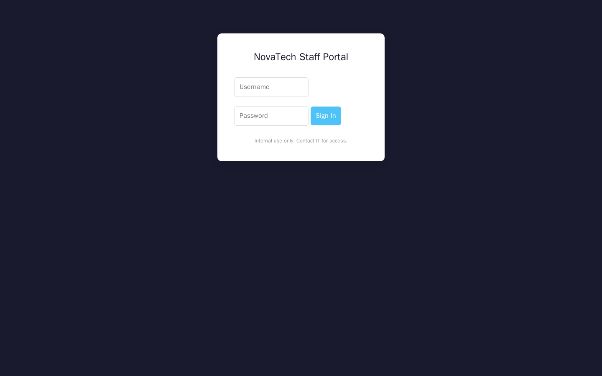
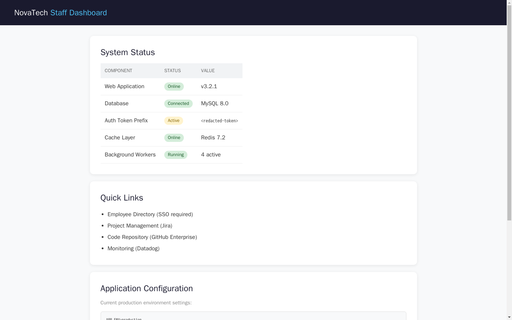

Exercise 10: Hidden Login Discovery
Before You Begin
Exercise 9 is behind you, and the course now returns to web application assessment techniques. You should have your VPN connected and a terminal ready. Exercise 5 introduced API enumeration and Exercise 6 covered command injection; the skills from both carry forward here, where you will combine directory discovery with credential-based access.
Scenario
NovaTech Solutions is a mid-size software development consultancy based in Austin, Texas. The company recently launched a redesigned corporate website and hired your firm, Blackridge Security, to perform a web application assessment before a SOC 2 (Service Organization Control Type 2) compliance audit next quarter.
Your point of contact, Devon Harris (VP of Engineering), provided the following brief: "We pushed the new site to production last week. The dev team assures me everything is locked down, but I want a second opinion. We are particularly concerned about any leftover development or staging interfaces that might have been accidentally deployed. The site should be a marketing page; nothing interactive."
The engagement scope covers the web application on the target host and any backend services you discover on the subnet. Devon mentioned that the team runs a MySQL database somewhere on the network but insisted it is "not internet-facing." A security token has been placed on each system as part of the assessment scope. Collect all three tokens and combine them as OCR{...} to complete the engagement.
Your Objectives
- Perform directory enumeration against the web application to discover hidden endpoints
- Analyze discovered pages for sensitive information and credentials
- Authenticate to a hidden staff portal using discovered default credentials
- Identify and connect to a backend database using leaked connection details
- Capture the flag
Background: Directory Enumeration and Default Credentials
Web applications often contain more than what is visible from the homepage. Developers frequently deploy administrative panels, staging pages, and internal tools alongside the public-facing site. When these hidden paths are not properly secured, an attacker can discover them through systematic enumeration.
robots.txt and Hidden Paths
The file robots.txt sits in the root directory of a web server and tells search engine crawlers which paths they should not index. While the file is intended for search engine etiquette, security testers read it because it often lists the exact directories the site owners want to keep out of public search results. A robots.txt entry does not block access; it is a polite request, not an access control mechanism.
Directory Brute-Forcing
Directory brute-forcing works by sending HTTP (Hypertext Transfer Protocol) requests for thousands of common directory and file names and watching the response codes. A 200 OK response means the path exists and returned content. A 301 or 302 means the server redirected you, which usually indicates a valid directory. A 404 Not Found means nothing is there. Tools like gobuster automate sending these requests using a wordlist; a text file containing one directory name per line.
Why Hidden Admin Panels Exist
Development teams often build internal dashboards, configuration pages, and staff portals during the development cycle. When the application moves to production, these interfaces sometimes remain accessible because no one removed them or placed them behind authentication. The risk compounds when these panels ship with default credentials; factory-set usernames and passwords that the team never changed. An attacker who discovers both the hidden panel and the default credentials gains authenticated access without any exploitation.
graph TD
A["Attacker scans<br/>target website"] --> B["Check robots.txt<br/>for hidden paths"]
A --> C["Run gobuster with<br/>common wordlist"]
B --> D["Discover<br/>/staff-portal/"]
C --> D
D --> E["View HTML source<br/>find token 1"]
E --> F["Login with<br/>default credentials"]
F --> G["Access dashboard<br/>find token 2"]
G --> H["Extract DB creds<br/>from config page"]
H --> I["Query MySQL<br/>find token 3"]
style A fill:#4a90d9,color:#fff
style B fill:#4a90d9,color:#fff
style C fill:#4a90d9,color:#fff
style D fill:#e8a735,color:#fff
style E fill:#e8a735,color:#fff
style F fill:#e8a735,color:#fff
style G fill:#6aaa64,color:#fff
style H fill:#6aaa64,color:#fff
style I fill:#6aaa64,color:#fffTool Primer: gobuster
Gobuster is a command-line tool that brute-forces directories and files on web servers. You provide a target URL and a wordlist, and gobuster requests each entry from the list and reports which paths return valid responses.
Basic syntax:
Common flags:
| Flag | Purpose |
|---|---|
dir |
Directory/file brute-forcing mode |
-u |
Target URL (include the scheme, e.g., http://) |
-w |
Path to the wordlist file |
-t |
Number of concurrent threads (default 10) |
-x |
File extensions to append (e.g., -x php,html) |
-s |
Status codes to treat as valid (default: 200, 204, 301, 302, 307) |
Wordlist location on the lab VM:
The most commonly used wordlist for directory enumeration is located at:
Sample output:
===============================================================
Gobuster v3.6
===============================================================
[+] Url: http://10.100.5.23
[+] Wordlist: /usr/share/wordlists/dirb/common.txt
[+] Threads: 10
===============================================================
/index.html (Status: 200) [Size: 4532]
/robots.txt (Status: 200) [Size: 87]
/staff-portal (Status: 301) [Size: 0] [--> /staff-portal/]
===============================================================
Each result line shows the discovered path, the HTTP status code, and the response size. A 301 redirect often indicates a directory; gobuster shows where the redirect points.
MySQL CLI Basics
MySQL provides a command-line client for connecting to database servers. You will use it later in the lab to query a backend database once you discover the connection credentials.
Connection syntax:
| Flag | Purpose |
|---|---|
-h |
Hostname or IP of the database server |
-u |
Username to authenticate with |
-p |
Password (no space between -p and the password) |
-e |
Execute a single SQL query and exit |
Example; run a query without entering the interactive shell:
The -e flag is useful when you need to run one query and capture the output directly in the terminal.
Walkthrough
Step 1: Launch the Exercise
Open the platform in your browser and start the exercise environment. You need the containers running before any web requests will succeed.
- Navigate to Exercises and locate the Web track
- Find Hidden Login Discovery and click Launch
- Wait for the status to change to Running
- Note the target IP displayed in the Active Lab View; you will use it throughout the walkthrough
Step 2: Browse the Main Site and Check robots.txt
Start by visiting the target website in your browser to see what is publicly visible. Open a second tab (or use curl) to check whether the site has a robots.txt file, since developers often list hidden directories there.
Browse the main page
Replace <target_ip> with the IP shown in the Active Lab View. The -s flag runs curl in silent mode so progress meters do not clutter the output.
The response is the public marketing page HTML. Scan it for any links or comments that hint at additional paths.
Check for robots.txt
A robots.txt file lists directories the site owners want crawlers to skip. Request it directly from the web root.
Review the output carefully. Look for any Disallow entries; these paths are directories the site owners asked search engines not to index. Note each path you find; you will visit them in a later step.
Step 3: Run gobuster with the common.txt Wordlist
While robots.txt may reveal some paths, a full directory scan can uncover additional endpoints that the file does not mention. Run gobuster against the target using the standard common wordlist.
Brute-force directories with gobuster
Gobuster requests every entry in the wordlist and reports paths that return valid responses. Replace <target_ip> with the target address before running it.
Wait for the scan to complete. Compare the gobuster results with the paths you found in robots.txt. You should see a /staff-portal entry among the results; a path that strongly suggests an internal login page.
Step 4: Access the Staff Portal and Examine the HTML Source
Navigate to the staff portal path discovered in the previous steps. The login page itself may contain useful information embedded in the HTML source code; developers sometimes leave build tags, version numbers, or debug comments in the markup.
Fetch the staff portal HTML source
Request the staff portal page so the raw HTML lands in your terminal where you can read the markup, including comments a browser would hide.
Read the HTML output carefully. Look for HTML comments (lines wrapped in <!-- -->) that might contain version strings, build identifiers, or tokens. One of the assessment tokens is embedded as a build tag comment in the login page source. Record the token value you find; it is token 1.

Step 5: Login with Default Credentials
The staff portal presents a login form. Many internal applications ship with default credentials that the development team sets during initial deployment and never changes. For a company-branded portal, the default username is often admin and the password follows a predictable pattern combining the company name with a year.
Log in with the following credentials:
- Username:
admin - Password:
NovaTech2024#
You can authenticate using curl or through your browser:
Authenticate with default credentials
Submit the discovered username and password to the login endpoint. The -c flag saves session cookies to a file so you can make authenticated requests afterward, and -L follows the post-login redirect.
curl -s -c /tmp/nova-cookies \
http://<target_ip>/staff-portal/login \
-d 'username=admin&password=NovaTech2024#' -L
Review the response; you should land on a dashboard page that displays the second assessment token.
Step 6: Explore the Dashboard and Extract Database Credentials
With authenticated access to the staff dashboard, explore the available pages. Configuration pages in internal tools frequently expose backend connection details, including database hostnames, usernames, and passwords.
Pull the authenticated dashboard
The -b flag sends the saved session cookies from your earlier login, proving you are authenticated. Request the dashboard so its content prints to the terminal.
Read through the dashboard content and look for database connection strings. You should find a MySQL hostname (or IP), a database username, and a password. Record all three values; you will need them in the next step.

Step 7: Connect to MySQL and Query for the Token
Use the database credentials you extracted from the dashboard to connect to the MySQL server. The database server runs on a separate host within the lab subnet.
Query the MySQL audit_tokens table
Connect to the remote database with the leaked credentials and run a single query using the -e flag, which executes the statement and exits without dropping into the interactive shell.
mysql --skip-ssl -h <db_ip> -u novatech_app -p'Pr0d_DB_2024#' novatech \
-e "SELECT * FROM audit_tokens"
Replace <db_ip> with the database server IP shown in the lab topology or discovered from the dashboard configuration page. The query targets the audit_tokens table in the novatech database. The result contains the third and final assessment token.
Record Your Findings
Record the output and tokens from each phase of the assessment below.
robots.txt contents:
gobuster results:
Token 1 (from HTML source):
Source Token Value Token 2 (from dashboard):
Source Token Value Token 3 (from MySQL query):
Source Token Value Assembled flag:
Step 8: Interpret the Results
Review the three tokens you collected and consider what each one represents in the context of a real-world assessment.
- Token 1 (HTML source comment): Sensitive information left in client-facing code. Any visitor who views the page source can see comments, build tags, and debug output. Production deployments should strip all development comments before release.
- Token 2 (staff dashboard): Accessible because the portal used default credentials. An attacker who guesses or brute-forces the login gains access to everything behind the authentication wall. Changing default credentials before deployment is a baseline security requirement.
- Token 3 (MySQL database): Reachable because the dashboard leaked connection strings and the database accepted remote connections. Storing plaintext credentials in a web interface and exposing a database port to the network creates a direct path from web access to data exfiltration.
Each token maps to a common vulnerability category: information disclosure, weak authentication, and insecure backend configuration.
Flag Format
Assemble the flag using the tokens in the order you discovered them:
OCR{<htmlsource_token>_<dashboard_token>_<database_token>}
Where <htmlsource_token> is the value from the staff portal HTML comment, <dashboard_token> is from the login dashboard response, and <database_token> is from the MySQL audit_tokens table.
Step 9: Submit the Flag
Combine the three tokens you collected into a single flag using the OCR{...} format. Separate each token with an underscore. Paste the assembled flag into the Submit Flag form on the platform and click Submit.
Analysis Questions
Consider each question carefully before checking the answer. These questions connect the lab techniques to broader security concepts.
1. An entry in robots.txt does not prevent access to a directory. Why do organizations still use the file, and why is it valuable to a penetration tester?
Reveal Answer
Organizations use robots.txt to prevent search engines from indexing pages that are not meant for public discovery; staging environments, admin panels, or internal tools. The file does not enforce access control; it relies on crawlers voluntarily obeying the directives. For a penetration tester, robots.txt is valuable precisely because it acts as a directory of paths the organization considers sensitive. Reading it provides enumeration results without sending a single brute-force request.
2. The staff portal used the credentials admin / NovaTech2024#; a pattern combining a generic username with the company name and year. What makes default credentials particularly dangerous compared to weak passwords?
Reveal Answer
Default credentials are dangerous because they are predictable and widely known. A weak password might be short or simple, but an attacker still needs to guess or crack it. Default credentials follow documented patterns; vendor manuals, setup guides, and public databases list them. An attacker who recognizes the software or vendor can look up the default login without any brute-forcing. The combination of a generic username like "admin" with a company-themed password is especially common in internal tools that teams deploy quickly and forget to harden.
3. The MySQL database was accessible from your attacker machine on port 3306. Devon Harris stated the database was "not internet-facing." What network segmentation failure does the lab demonstrate?
Reveal Answer
The database server accepted connections from any host on the subnet, not only from the web application server. In a properly segmented network, the database would sit in a restricted network zone with firewall rules allowing connections only from the application tier. The lab demonstrates that "not internet-facing" does not mean "not accessible"; a host on the same internal network (or VPN) can still reach the database if no firewall rules enforce segmentation between zones.
Key Takeaways
- Directory enumeration using tools like gobuster and passive sources like robots.txt reveals web application paths that developers intended to keep hidden but failed to protect with access controls
- Default credentials remain one of the most common entry points into internal applications; changing factory-set usernames and passwords before production deployment is a non-negotiable security step
- HTML source code can leak sensitive information through comments, build tags, and debug output that developers leave in place during the transition from development to production
- Backend database exposure occurs when connection credentials are displayed in web interfaces and the database server accepts connections from hosts outside the application tier; proper network segmentation and credential management prevent both issues
- Chaining low-severity findings (a robots.txt entry, a default login, a leaked connection string) can produce high-impact access; Week 11 builds on these chaining techniques with more complex multi-stage assessments